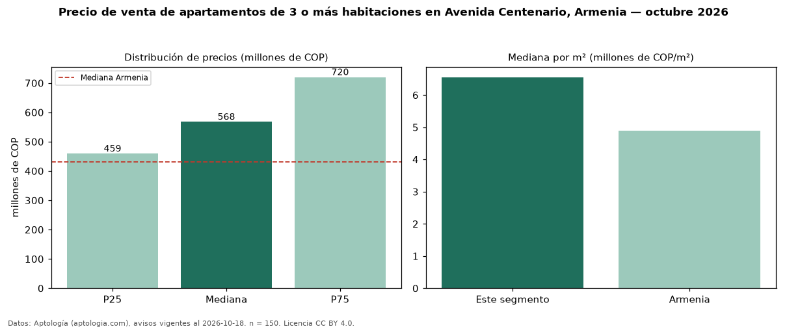

Precio de venta de apartamentos de 3 o más habitaciones en Avenida Centenario, Armenia — octubre 2026
Con 150 avisos vigentes, el precio mediano de apartamentos de 3 o más habitaciones en venta en Avenida Centenario, Armenia es COP 568 millones. Frente a la mediana de Armenia para apartamentos de 3 o más habitaciones (COP 430 millones), queda 32 % por encima. Por metro cuadrado, la mediana es COP 6,55 millones/m² (n = 148 avisos con área), 34 % por encima de Armenia (COP 4,88 millones/m²). Son 70 % de los 215 avisos de apartamentos en venta de la zona, cuya mediana general es COP 545 millones (+4 %). El área mediana anunciada es 86 m². La administración mediana declarada es COP 377.000 al mes (n = 84). El estrato más frecuente es 5 (68 % de los avisos con estrato). 91 % de los avisos con el dato declara parqueadero o cochera. Datos: Aptología (aptologia.com), CC BY 4.0 — https://www.aptologia.com/venta/armenia/avenida-centenario. Archivos: PDF, CSV con las cifras y gráfica PNG.

| Avisos únicos | 150 |
|---|---|
| Percentil 25 | COP 458.899.660 |
| Mediana | COP 567.500.000 |
| Percentil 75 | COP 719.750.000 |
| Mediana por m² | COP 6.552.953 |
Fuente: avisos vigentes de portales inmobiliarios recopilados por Aptología, deduplicados (mínimo 30 avisos únicos por celda). Precios pedidos, no cerrados. Fecha: 2026-10-18.